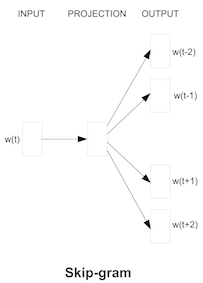

Word2Vec
Word2Vec is a generic term for algorithms for learning distributed representations of words, originating from a paper published in 2013 by Tomas Mikolov et al. at Google at the time.
In NLP tasks, the input consists of words, but if words are treated as words, they are just a list of letters to the computer, making it difficult to solve complex NLP tasks such as translation and document classification.
Therefore, task performance is directly related to how well words, phrases, sentences, and other semantic elements can be converted into useful semantic representations or features.
Word2Vec is one of the most well-known tools for learning useful features (vectors) from words; with Word2Vec, semantically similar words can be converted into similar vectors, and furthermore, the resulting word vectors are additive in nature. For example, "Japan" - "Tokyo" ≒ "France" - "Paris".
The graph below visualizes the vectors of several countries and their capitals after acquiring word vectors with Skipgram, one of Word2Vec's algorithms, and then compressing the dimensionality using PCA. This is one of the reasons why Word2Vec has become famous, because it can even learn the relationship between countries and their capitals, despite the fact that it is unsupervised learning.

Reference: Distributed Representations of Words and Phrases and their Compositionality
There are two main learning models for Word2vec, called CBOW and Skipgram.
CBOW learns a word vector that can solve a word prediction task based on surrounding words and Skipgram learns a word vector that can solve a word prediction task based on surrounding words.
These can both be viewed as based on the "distributional hypothesis" that words are characterized by their surroundings.
In this exercise, we will implement CBOW and Skipgram using PyTorch and actually train on a Japanese dataset. (For this reason, we will also deal with Japanese preprocessing.) In addition, we will also implement Negative Sampling, an efficient learning method.
0.Preparation
# Installing MeCab
!pip install mecab-python3 unidic-lite# Mount the drive (remember to set the runtime to GPU!)
from google.colab import drive
drive.mount("/content/drive")import time
import MeCab
import numpy as np
import torch
import torch.nn as nn
import torch.nn.functional as F
import torch.optim as optim
device = torch.device("cuda" if torch.cuda.is_available() else "cpu")1.Preprocessing
1.1Morphological analysis
Morphological analysis is the process of dividing a sentence or other text into a sequence of morphemes, the smallest unit of meaning in a language, and inferring its part of speech.
tagger = MeCab.Tagger()
node = tagger.parse("坊主が屏風に上手に坊主の絵を描いた")
print(node)坊主 ボーズ ボウズ 坊主 名詞-普通名詞-一般 1 が ガ ガ が 助詞-格助詞 屏風 ビョーブ ビョウブ 屏風 名詞-普通名詞-一般 0 に ニ ニ に 助詞-格助詞 上手 ジョーズ ジョウズ 上手 形状詞-一般 3 に ニ ダ だ 助動詞 助動詞-ダ 連用形-ニ 坊主 ボーズ ボウズ 坊主 名詞-普通名詞-一般 1 の ノ ノ の 助詞-格助詞 絵 エ エ 絵 名詞-普通名詞-一般 1 を オ ヲ を 助詞-格助詞 描い エガイ エガク 描く 動詞-一般 五段-カ行 連用形-イ音便 2 た タ タ た 助動詞 助動詞-タ 終止形-一般 EOS
1.2 Split sentences into morphemes using MeCab
Using the results of the morphological analysis described earlier, define a function to split Japanese sentences into morphemes.
def tokenize(sentence):
"""Function to split a Japanese sentence into a sequence of morphemes
:param sentence: str, sentence in Japanese
:return tokenized_sentence: list of str, morpheme list
"""
node = tagger.parse(sentence)
tokens = node.split("\n")
tokenized_sentence = []
for token in tokens:
features = token.split("\t")
token_str = features[0]
if token_str == "EOS":
# End when the sentence is finished.
break
# Add split morpheme
tokenized_sentence.append(token_str)
return tokenized_sentencetokenize("坊主が屏風に上手に坊主の絵を描いた")['坊主', 'が', '屏風', 'に', '上手', 'に', '坊主', 'の', '絵', 'を', '描い', 'た']
1.3 Data loading
The subject will be 『こころ』 by Soseki Natsume.
def load_data(path):
"""Function to read『こころ』
:param path: str, path to『こころ』
:return text: list of list of str, 『こころ』 which each sentence is tokenized.
"""
text = []
with open(path, "r") as f:
for line in f:
line = line.strip()
line = tokenize(line)
text.append(line)
return textcorpus = load_data("kokoro.txt")
print(corpus[0])
['私', 'は', 'その', '人', 'を', '常', 'に', '先生', 'と', '呼ん', 'で', 'い', 'た', '。']
1.4Dictionary construction
A dictionary is built to assign unique IDs to words appearing in the corpus (document data).
If all words are registered in the dictionary, the vocabulary often becomes so large (10,000 to 1,000,000 words) that memory becomes insufficient.
Therefore, the dictionary size is limited by the frequency of occurrence of words.
This procedure is almost always required in NLP.
# Special tokens and their IDs are predefined.
PAD_TOKEN = '<PAD>' # It is used for padding, which will be explained later.
UNK_TOKEN = '<UNK>' # All words not found in the dictionary are replaced with this UNK token (UNK comes from UNKOWN)
PAD_ID = 0 # id for <PAD>
UNK_ID = 1 # id for <UNK># Initialization of dictionaries
word2id = {
PAD_TOKEN: PAD_ID,
UNK_TOKEN: UNK_ID,
}
# Minimum number of occurrences of words to be included in the dictionary
# This time, due to the small size of the corpus, we will include all words in the dictionary
MIN_COUNT = 1class Vocab(object):
"""Classes for managing vocabulary"""
def __init__(self, word2id=None):
"""
:param word2id: Dictionary to convert word (str) to index (int)
"""
if word2id is None:
word2id = {}
self.word2id = dict(word2id)
self.id2word = {v: k for k, v in self.word2id.items()}
self.word_counter = None
def build(self, sentences, min_count=1):
"""Methods for building lexicons from corpora
:param sentences: list of list of str, corpus (e.g. of a structured set of data)
:param min_count: int, Minimum number of occurrences of words to be included in the dictionary
"""
# Create a dictionary that counts the number of occurrences of each word
word_counter = {}
for sentence in sentences:
for word in sentence:
# `dict.get(key, 0)` will return `dict[key]` if the dict contains a key
# If not, the method returns 0 (default value)
word_counter[word] = word_counter.get(word, 0) + 1
# Only words that occur more than min_count times are added to the vocabulary
# Words with the highest number of occurrences are added to word2id in order.
# Sort by the number of occurrences multiplied by -1 to sort in descending order of the number of occurrences.
for word, count in sorted(word_counter.items(), key=lambda x: -x[1]):
if count < min_count:
break
_id = len(self.word2id)
self.word2id.setdefault(word, _id)
self.id2word[_id] = word
# Keeps the number of occurrences of a word in the vocabulary (to be used later)
self.word_counter = {
w: word_counter[w] for w in self.word2id.keys() if w in word_counter
}vocab = Vocab(word2id=word2id)
vocab.build(corpus, min_count=MIN_COUNT)
vocab_size = len(vocab.word2id) # Total vocabulary
print(f"Total vocabulary：{vocab_size}")Total vocabulary：6504
1.5 Word IDing
def sentence_to_ids(vocab, sentence):
"""
Function to convert a list of words into a list of IDs
:param vocab: class `Vocab` object
:param sentence: list of str, List of words obtained by splitting sentences
:return _ids: list of int, List of word IDs
"""
# Assign UNK IDs to words not in the dictionary
_ids = [vocab.word2id.get(word, UNK_ID) for word in sentence]
return _ids# Converts Japanese text to word IDs.
corpus_ids = [sentence_to_ids(vocab, sentence) for sentence in corpus]
print(corpus[0])
print(corpus_ids[0])['私', 'は', 'その', '人', 'を', '常', 'に', '先生', 'と', '呼ん', 'で', 'い', 'た', '。'] [11, 6, 22, 62, 9, 484, 5, 29, 10, 456, 13, 20, 3, 4]
1.6. Padding
In NLP, we often perform an operation called Padding to unify the length of sequences (sentences, word sequences, etc).
This is because matrix operations cannot be performed unless the lengths of each sequence are equal.
Here, PAD(=0) is added as many times as necessary after the length of a sequence that is less than or equal to max_length.
Sequences longer than max_length can be handled by omitting them from the data, or by trimming the end of the sequence as much as necessary.
def pad_seq(seq, max_length):
"""Function to perform Padding
:param seq: list of int, List of word indexes
:param max_length: int, Maximum length of series in the batch
:return seq: list of int, List of word indexes
"""
seq += [PAD_ID for i in range(max_length - len(seq))]
return seqpad_seq(corpus_ids[0], 20)[11, 6, 22, 62, 9, 484, 5, 29, 10, 456, 13, 20, 3, 4, 0, 0, 0, 0, 0, 0]
2. CBOW (Continuous Bag of Words)
It learns a vector of words by solving the task of predicting a target word (w(t)) from surrounding words (w(t-2). .w(t+2)) to predict the target word.
First, the surrounding words are made into a vector in the embedding layer, then summed, and then the target word is predicted via the all-join layer.
source: Efficient Estimation of Word Representations in Vector Space
# Hyper Parameters
embedding_size = 300 # Number of vector dimensions to assign to each word
batch_size = 64 # Mini Batch Size
n_epochs = 3 # Number of Epochs to be studied2.1 Data loader
Define a data loader that retrieves a portion of the data (mini-batch) from the data set.
A dataset refers to the entire data set, and a mini-batch refers to a set of data that is divided into smaller data sets. Since datasets are often large in size, the model is not trained by feeding the entire dataset to the model at once, but rather by dividing the data into mini-batches and feeding them to the model multiple times. (Reference: Batch learning, mini-batch learning, online learning)
Usually, in supervised learning, each mini-batch consists of input data and correct answer data. In this case, the input data (batch_X) are the surrounding words (IDs) and the correct data (batch_Y) are the target words (IDs).
Each mini-batch should be a Tensor of size (batch_size, window*2). In this case, the Padding operation defined earlier is used to align the length of each data.
class DataLoaderCBOW(object):
"""data loader for CBOW"""
def __init__(self, corpus_ids, batch_size, window=3):
"""
:param corpus_ids: list of list of int, Dataset with words converted to IDs
:param batch_size: int, Mini Batch Size
:param window: int, Maximum distance between surrounding words and target word
"""
self.corpus_ids = corpus_ids
self.batch_size = batch_size
self.window = window
self.s_pointer = 0 # Sentence-by-sentence pointer to scan over the data set
self.w_pointer = 0 # A word-by-word pointer to scan over the data set
self.max_s_pointer = len(corpus_ids) # Total number of sentences in the dataset
def __iter__(self):
return self
def __next__(self):
batch_X = []
batch_Y = []
while len(batch_X) < self.batch_size:
# Sentence to be scanned
sentence_ids = self.corpus_ids[self.s_pointer]
# Words to Predict
word_Y = sentence_ids[self.w_pointer]
# Obtain a set of words as input
start = max(0, self.w_pointer - self.window)
word_X = (
sentence_ids[start : self.w_pointer]
+ sentence_ids[self.w_pointer + 1 : self.w_pointer + self.window + 1]
)
word_X = pad_seq(word_X, self.window * 2)
batch_X.append(word_X)
batch_Y.append(word_Y)
self.w_pointer += 1
if self.w_pointer >= len(sentence_ids):
# When finished traversing a statement, move the pointer to the beginning of the next statement.
self.w_pointer = 0
self.s_pointer += 1
if self.s_pointer >= self.max_s_pointer:
# Exit when all sentences have been scanned.
self.s_pointer = 0
raise StopIteration
# Data must be torch.Tensor. dtype, device must also be specified.
batch_X = torch.tensor(batch_X, dtype=torch.long, device=device)
batch_Y = torch.tensor(batch_Y, dtype=torch.long, device=device)
return batch_X, batch_Y
Tips: Embedding
Embedding is a technique that is almost always used for deep learning in NLP, and the layer in which embedding is performed is called the Embedding Layer.
Simply put, Embedding refers to embedding (assigning) "a word" into (to) a "d-dimensional vector.
A quadratic matrix of row vectors corresponding to all words in the vocabulary connected vertically (number of words × dimension of vectors) is the parameter of the Embedding Layer, also called Embedding Matrix.
In this embedding layer, the input is the word ID (apple: 13) and the output is a d-dimensional vector (the vector in row 13 of the Embedding Matrix) corresponding to the input word ID.
Word2Vec then treats the parameters of the Embedding Layer as word representations after training is completed.
- Terminology Summary
- Embedding
- Embedding words into a vector.
- Embedding Layer
- Layer to perform Embedding
- Embedding Matrix
- In Embedding Layer parameters, size is (vocabulary, vector dimension)
# examples
e = nn.Embedding(vocab_size, embedding_size) # Define embedding layer
# Enter a vector consisting of word IDs
words_1D = torch.tensor([1, 2, 3], dtype=torch.long) # dtype must be torch.long
print("Before embedding:", words_1D.shape)
embed_words = e(words_1D) # Convert word IDs to vectors
print("After embedding:", embed_words.shape)
print()
# Input to embedding layer can be 2D
words_2D = torch.tensor([[1, 2, 3], [4, 5, 6]], dtype=torch.long)
print("Before embedding:", words_2D.shape)
embed_words = e(words_2D)
print("After embedding:", embed_words.shape)Before embedding: torch.Size([3]) After embedding: torch.Size([3, 300]) Before embedding: torch.Size([2, 3]) After embedding: torch.Size([2, 3, 300])
2.2 CBOW Model Definition
The objective function is Negative Log Likelihood (NLL).
Conditional probability of word wt p(wt|wt-c,... ,wt-1,wt+1,... ,wt+c) is the conditional probability that the surrounding words wt-c,... ,wt-1,wt+1,... ,wt+c) represents the probability that the t-th word is wt when the surrounding words are wt-c,...,wt-1,wt+1,...,wt+c. It is obtained by summing the surrounding word vectors and then linearly transforming the dimension from embedding_size to vocab_size, followed by the probability distribution obtained via the softmax function.
class CBOW(nn.Module):
def __init__(self, vocab_size, embedding_size):
"""
:param vocab_size: int, Total vocabulary
:param embedding_size: int, Dimensions of the word embedding vector
"""
super().__init__()
# embedded layer
self.embedding = nn.Embedding(vocab_size, embedding_size)
# All bonding layers (no bias)
self.linear = nn.Linear(embedding_size, vocab_size, bias=False)
def forward(self, batch_X, batch_Y):
"""
:param batch_X: torch.Tensor(dtype=torch.long), (batch_size, window*2)
:param batch_Y: torch.Tensor(dtype=torch.long), (batch_size,)
:return loss: torch.Tensor(dtype=torch.float), CBOWのloss
"""
emb_X = self.embedding(batch_X) # (batch_size, window*2, embedding_size)
# Masking to ignore padded areas
emb_X = emb_X * (batch_X != PAD_ID).float().unsqueeze(-1) # (batch_size, window*2, embedding_size)
sum_X = torch.sum(emb_X, dim=1) # (batch_size, embedding_size)
lin_X = self.linear(sum_X) # (batch_size, vocab_size)
log_prob_X = F.log_softmax(lin_X, dim=-1) # (batch_size, vocab_size)
loss = F.nll_loss(log_prob_X, batch_Y)
return loss2.3. Training
# Models
cbow = CBOW(vocab_size, embedding_size).to(device)
# optimizer
optimizer_cbow = optim.Adam(cbow.parameters())
# Data loader
dataloader_cbow = DataLoaderCBOW(corpus_ids, batch_size)def compute_loss(model, input, optimizer=None, is_train=True):
"""Function to calculate loss
If is_train=True, the model is placed in train mode, and
If is_train=False, sets the model to evaluation mode
:param model: Model to be trained
:param input: Input to model
:param optimizer: optimizer
:param is_train: bool, Whether to train the model or not
"""
model.train(is_train)
# Calculate loss.
loss = model(*input)
if is_train:
# Set all gradients in the model's parameter to 0 before executing .backward()
optimizer.zero_grad()
# Calculates the gradient of a parameter.
loss.backward()
# Update the parameter with the gradient of the parameter.
optimizer.step()
return loss.item()time_start = time.time()
for i_epoch in range(1, n_epochs + 1):
print(f"Epoch: {i_epoch}")
for batch_id, (batch_X, batch_Y) in enumerate(dataloader_cbow):
loss = compute_loss(cbow, (batch_X, batch_Y), optimizer=optimizer_cbow, is_train=True)
if batch_id % 100 == 0:
print(f"batch: {batch_id:4d}, loss: {loss:2.3f}")
# Save only the parameters of the embedding layer
torch.save(cbow.embedding.weight.data.cpu().numpy(), f"./data/models/cbow_embedding_{i_epoch}e.pth")
time_elapsed = time.time() - time_start2.4. Save Trained Parameters
The parameters of the embedding layer at the end of CBOW training are taken to represent the characteristics of each word.
Therefore, only the parameters of the CBOW embedding layer are stored.
3. Skipgram
It learns word vectors by solving the task of predicting surrounding words ( w(t-2). .w(t+2)) from the target word ( w(t)).
source: Efficient Estimation of Word Representations in Vector Space
3.1 Definie Data Loader
class DataLoaderSG(object):
"""Data loader for Skipgram"""
def __init__(self, corpus_ids, batch_size, window=3):
"""
:param corpus_ids: list of list of int, Dataset with words converted to IDs
:param batch_size: int, Mini Batch Size
:param window: int, Maximum distance between surrounding words and input words
"""
self.corpus_ids = corpus_ids
self.batch_size = batch_size
self.window = window
self.s_pointer = 0 # Sentence-by-sentence pointer to scan over the data set
self.w_pointer = 0 # A word-by-word pointer to scan over the data set
self.max_s_pointer = len(corpus_ids) # Total number of sentences in the dataset
def __iter__(self):
return self
def __next__(self):
batch_X = []
batch_Y = []
while len(batch_X) < self.batch_size:
sentence_ids = self.corpus_ids[self.s_pointer]
# Skipgram allows one word of input
word_X = sentence_ids[self.w_pointer]
# Output is a peripheral word
start = max(0, self.w_pointer - self.window)
word_Y = (
sentence_ids[start : self.w_pointer]
+ sentence_ids[self.w_pointer + 1 : self.w_pointer + self.window + 1]
)
word_Y = pad_seq(word_Y, self.window * 2)
batch_X.append(word_X)
batch_Y.append(word_Y)
self.w_pointer += 1
if self.w_pointer >= len(sentence_ids):
self.w_pointer = 0
self.s_pointer += 1
if self.s_pointer >= self.max_s_pointer:
self.s_pointer = 0
raise StopIteration
batch_X = torch.tensor(batch_X, dtype=torch.long, device=device)
batch_Y = torch.tensor(batch_Y, dtype=torch.long, device=device)
return batch_X, batch_YTips: torch.gather(input, dim, index)
The following operations are performed along the specified dim. (if input and index were 3D tensor)
See chap1 for details.
reference: https://pytorch.org/docs/stable/generated/torch.gather.html#torch.gather
3.2 Model Definition
The objective function is Negative Log Likelihood (NLL).
p(wt+j|wt) represents the probability that the word wt+j exists around the word wt. This probability is obtained by the probability distribution obtained via the softmax function after converting the embedding vector of word wt from embedding_size to vocab_size in dimension by a linear transformation (corresponding to lines 3-4 of the equation below).
When implementing, it is inefficient to do the same calculation log(softmax(vTtW)st+j) for each j. Therefore, it would save computation time if the values corresponding to all j could be extracted using torch.gather after log(softmax(vTtW)) is calculated.
class Skipgram(nn.Module):
def __init__(self, vocab_size, embedding_size):
"""
:param vocab_size: int, Total vocabulary
:param embedding_size: int, Dimensions of the word embedding vector
"""
super().__init__()
self.embedding = nn.Embedding(vocab_size, embedding_size)
self.linear = nn.Linear(embedding_size, vocab_size, bias=False)
def forward(self, batch_X, batch_Y):
"""
:param batch_X: torch.Tensor(dtype=torch.long), (batch_size,)
:param batch_Y: torch.Tensor(dtype=torch.long), (batch_size, window*2)
:return loss: torch.Tensor(dtype=torch.float), Skipgramのloss
"""
emb_X = self.embedding(batch_X) # (batch_size, embedding_size)
lin_X = self.linear(emb_X) # (batch_size, vocab_size)
log_prob_X = F.log_softmax(lin_X, dim=-1) # (batch_size, vocab_size)
log_prob_X = torch.gather(log_prob_X, 1, batch_Y) # (batch_size, window*2)
# Mask the loss of the padded word so that it is not computed (= set the corresponding part of the loss to 0).
log_prob_X = log_prob_X * (batch_Y != PAD_ID).float() # (batch_size, window*2)
loss = log_prob_X.sum(1).mean().neg()
return loss3.3. Training
sg = Skipgram(vocab_size, embedding_size).to(device)
optimizer_sg = optim.Adam(sg.parameters())
dataloader_sg = DataLoaderSG(corpus_ids, batch_size)time_start = time.time()
for i_epoch in range(1, n_epochs + 1):
print(f"Epoch: {i_epoch}")
for batch_id, (batch_X, batch_Y) in enumerate(dataloader_sg):
loss = compute_loss(sg, (batch_X, batch_Y), optimizer=optimizer_sg, is_train=True)
if batch_id % 100 == 0:
print(f"batch:{batch_id:4d}, loss:{loss:2.3f}")
# Save only the parameters of the embedding layer
torch.save(sg.embedding.weight.data.cpu().numpy(), f"./data/models/sg_embedding_{i_epoch}e.pth")
time_elapsed = time.time() - time_start
print(f"Elapsed time: {time_elapsed:.2f} [sec]")
print()4. Skipgram with Negative Sampling
Tips: Negative Sampling
It is one of the methods used to learn word vectors proposed by [Mikolov et al. 2013] and implemented in gensim's word2vec. Negative sampling is the random sampling of data that does not actually exist (=negative examples).
The background of the proposal is that the conventional Skipgram and CBOW learn word vectors by maximizing the likelihood of co-occurrence of the target word ( wt ) and its surrounding words ( wt+j ) in a sentence. However, since this likelihood uses a softmax function, the computational complexity is O(n), which is huge since it is proportional to the number of words n (usually about 10^5 to 10^7).
Therefore, instead of using the sigmoid function instead of the softmax function to reduce the computational complexity to O(1), a new Negative Sampling was introduced to ensure the quality of the word vectors. In the original paper, we maximized the likelihood of actually co-occurring word pairs, i.e., positive examples, while minimizing the likelihood of negative examples obtained by Negative Sampling.
reference: Distributed Representations of Words and Phrases and their Compositionality
4.0. preparing Negative Sampling
In the original paper, the probability distribution Pn(w) used for sampling negative examples is defined from the number of occurrences U(w) of word w in the corpus as follows
This method of obtaining the probability distribution is a heuristic, but the original paper reported that it worked well after trial and error. This is probably because 3/4 has the effect of preventing sampling of only high-frequency words (is, the, etc.)
Note that the special tokens PAD and UNK do not appear in the corpus when actually implemented.
# Probability distribution used for negative sampling
weights = np.power([0, 0] + list(vocab.word_counter.values()), 0.75)
weights = weights / weights.sum()4.1. data loader
Unlike 3.Skipgram, Negative Sampling is performed in the data loader.
class DataLoaderSGNS(object):
def __init__(self, corpus_ids, batch_size, window=3, n_negative=5, weights=None):
"""
:param corpus_ids: list of list of int, Dataset with words converted to IDs
:param batch_size: int, Mini Batch Size
:param window: int, Maximum distance between surrounding words and input words
:param n_negative: int, Number of negative examples
:param weights: numpy.ndarray, Probability distribution used in Negative Sampling
"""
self.corpus_ids = corpus_ids
self.batch_size = batch_size
self.window = window
self.n_negative = n_negative
self.weights = None
if weights is not None:
self.weights = torch.FloatTensor(weights) # negative samplingに使う確率分布
self.s_pointer = 0 # sentence pointer
self.w_pointer = 0 # Word pointer
self.max_s_pointer = len(corpus_ids)
def __iter__(self):
return self
def __next__(self):
batch_X = []
batch_Y = []
batch_N = [] # negative example
while len(batch_X) < self.batch_size:
sentence_ids = self.corpus_ids[self.s_pointer]
start = max(0, self.w_pointer - self.window)
word_X = sentence_ids[self.w_pointer]
word_Y = (
sentence_ids[start:self.w_pointer]
+ sentence_ids[self.w_pointer + 1:self.w_pointer + self.window + 1]
)
word_Y = pad_seq(word_Y, self.window * 2)
batch_X.append(word_X)
batch_Y.append(word_Y)
# Sampling negative examples with multinomial distribution
# Positive examples have not been removed to simplify implementation
negative_samples = torch.multinomial(self.weights, self.n_negative) # (n_negative,)
batch_N.append(negative_samples.unsqueeze(0)) # (1, n_negative)
self.w_pointer += 1
if self.w_pointer >= len(sentence_ids):
self.w_pointer = 0
self.s_pointer += 1
if self.s_pointer >= self.max_s_pointer:
self.s_pointer = 0
raise StopIteration
batch_X = torch.tensor(batch_X, dtype=torch.long, device=device)
batch_Y = torch.tensor(batch_Y, dtype=torch.long, device=device)
batch_N = torch.cat(batch_N, dim=0).to(device) # (batch_size, n_negative)
return batch_X, batch_Y, batch_N4.2. Define the model
The objective function of Skipgram with Negative Sampling (SGNS) reduces computational complexity by defining p(wt+j|wt)=σ(v′Tt+jvt). This is due to the use of a sigmoid function instead of a softmax function for the activation function.
In order to minimize the likelihood of the negative cases by negative sampling in addition to maximizing the likelihood of the positive cases, the objective function is written as follows
class SGNS(nn.Module):
def __init__(self, vocab_size, embedding_size):
"""
:param vocab_size: int, Total vocabulary
:param embedding_size: int, Dimensions of word embedding vectors
"""
super().__init__()
# Embedded layer of input words
self.i_embedding = nn.Embedding(vocab_size, embedding_size)
# Embedded layer of output words
self.o_embedding = nn.Embedding(vocab_size, embedding_size)
def forward(self, batch_X, batch_Y, batch_N):
"""
:param batch_x: torch.Tensor(dtype=torch.long), (batch_size,)
:param batch_y: torch.Tensor(dtype=torch.long), (batch_size, window*2)
:param batch_n: torch.Tensor(dtype=torch.long), (batch_size, n_negative)
"""
embed_X = self.i_embedding(batch_X).unsqueeze(2) # (batch_size, embedding_size, 1)
embed_Y = self.o_embedding(batch_Y) # (batch_size, window*2, embedding_size)
embed_N = self.o_embedding(batch_N).neg() # (batch_size, n_negative, embedding_size)
loss_Y = torch.bmm(embed_Y, embed_X).squeeze().sigmoid().log() # (batch_size, window*2)
loss_Y = loss_Y * (batch_Y != PAD_ID).float() # (batch_size, window*2)
loss_Y = loss_Y.sum(1) # (batch_size,)
loss_N = torch.bmm(embed_N, embed_X).squeeze().sigmoid().log().sum(1) # (batch_size,)
return -(loss_Y + loss_N).mean()4.3. Training
sgns = SGNS(vocab_size, embedding_size).to(device)
optimizer_sgns = optim.Adam(sgns.parameters())
dataloader_sgns = DataLoaderSGNS(corpus_ids, batch_size, n_negative=5, weights=weights)time_start = time.time()
for i_epoch in range(1, n_epochs + 1):
print(f"Epoch: {i_epoch}")
for batch_id, (batch_X, batch_Y, batch_N) in enumerate(dataloader_sgns):
loss = compute_loss(sgns, (batch_X, batch_Y, batch_N), optimizer=optimizer_sgns, is_train=True)
if batch_id % 100 == 0:
print(f"batch:{batch_id:4d}, loss:{loss:2.3f}")
# Save only Embedding parameters
torch.save(sgns.i_embedding.weight.data.cpu().numpy(), f"./data/models/sgns_embedding_{i_epoch}e.pth")
time_elapsed = time.time() - time_start
print(f"Elapsed time: {time_elapsed:.2f} [sec]")
print()5. Word Similarity
If the word meanings are similar, the word vectors should be similar.
To determine whether words are "similar" to each other, cos-similarity between word vectors is often used.
The cos similarity is calculated using the angle θ between the word vectors as:
The more similar the meanings of the words are to each other, the closer the cos similarity is considered to be to 1.
Let's see which words are considered similar to which words when studied in Word2Vec.
def compute_word_similarity(embedding_path, word, n):
"""
Function to return the word most similar to a given word and the cos similarity
:param embedding_path: str, Path of saved embedded layer parameters
:param word: str, word
:param n: int
:return out: str, Top n similar words and their cos similarity
"""
embedding = torch.load(embedding_path)
# Make all word vectors into unit vectors
norm = np.linalg.norm(embedding, ord=2, axis=1, keepdims=True)
norm = np.where(norm==0, 1, norm) # Avoid dividing by zero.
embedding /= norm
e = embedding[vocab.word2id[word]]
# Calculate cos similarity between word vectors
cos_sim = np.dot(embedding, e.reshape(-1, 1)).reshape(-1,)
most_sim = np.argsort(cos_sim)[::-1][1:n+1] # Excluding yourself.
most_sim_words = [vocab.id2word[_id] for _id in most_sim]
top_cos_sim = cos_sim[most_sim]
out = ", ".join([f"{word}({sim:.3f})" for word, sim in zip(most_sim_words, top_cos_sim)])
return outmodels = ["cbow", "sg", "sgns"]
# When 1 epoch is learned.
for model in models:
print(
f"{model:4}: ",
compute_word_similarity(f"./data/models/{model}_embedding_1e.pth", "私", 5),
)
# When 2 epoch is learned.
for model in models:
print(
f"{model:4}: ",
compute_word_similarity(f"./data/models/{model}_embedding_2e.pth", "私", 5),
)
# When 3 epoch is learned.
for model in models:
print(
f"{model:4}: ",
compute_word_similarity(f"./data/models/{model}_embedding_3e.pth", "私", 5),
)
6. Word Analogy
The next step is to evaluate the model by whether the words can be analogized by adding or subtracting word vectors.
Here we list the words that are most similar when measured by v("father")-v("man")+v("woman") and cos similarity.
The model with "mother" at the top of the list is considered superior.
def compute_word_analogy(embedding_path, word1, word2, word3, n):
"""Function to return the word with the highest similarity to word1 - word2 + word3
:param embedding_path: str, Path of saved embedded layer parameters
:param word1: str, word
:param word2: str, word
:param word3: str, word
:param n: int
:return out: str, Top n similar words and their cos similarity
"""
embedding = torch.load(embedding_path)
w1 = vocab.word2id[word1]
w2 = vocab.word2id[word2]
w3 = vocab.word2id[word3]
v1 = embedding[w1]
v2 = embedding[w2]
v3 = embedding[w3]
v = v1 - v2 + v3
v /= np.linalg.norm(v, ord=2)
norm = np.linalg.norm(embedding, ord=2, axis=1, keepdims=True)
norm = np.where(norm==0, 1, norm) # Avoid dividing by zero.
embedding /= norm
cos_sim = np.dot(embedding, v.reshape(-1, 1)).reshape(-1,)
most_sim = np.argsort(cos_sim)[::-1][:n]
most_sim_words = [vocab.id2word[_id] for _id in most_sim]
top_cos_sim = cos_sim[most_sim]
out = ", ".join([f"{word}({sim:.3f})" for word, sim in zip(most_sim_words, top_cos_sim)])
return out# When 1 epoch is learned.
for model in models:
print(
f"{model:4}: ",
compute_word_analogy(f"./data/models/{model}_embedding_1e.pth", "父", "男", "女", 5),
)
# When 2 epoch is learned.
for model in models:
print(
f"{model:4}: ",
compute_word_analogy(f"./data/models/{model}_embedding_2e.pth", "父", "男", "女", 5),
)
# When 3 epoch is learned.
for model in models:
print(
f"{model:4}: ",
compute_word_analogy(f"./data/models/{model}_embedding_3e.pth", "父", "男", "女", 5),
)